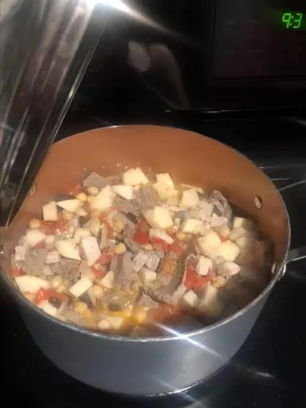

Description
This rich Pinoy pork menudo dish is usually prepared on special occasions or when you're expecting company.

Ingredients
- 2 ¼ boneless pork chops
- ½ pound pork liver
- 3 tablespoons olive oil
- 2 cloves garlic, minced
- 1 onion, diced
- salt and pepper to taste
- 2 tomatoes, diced
- 1 (15.5 ounce) can garbanzo beans, drained
- 1 (1.5 ounce) box raisins
- 2 potatoes, diced
Steps
- Bring a large pot of lightly salted water to a boil; add pork chops and return to a boil. Cook pork chops at a boil for 5 minutes, remove, and set aside to cool. Remove 1 cup of broth from the pot and set aside for later use. Once chops are cooled to the touch, cut them into bite-size pieces.
- Return water to a boil; add pork liver to the pot and cook at a boil until tender, 7 to 10 minutes. Drain and discard liquid. Set liver aside to cool; cut into bite-size pieces.
- Heat olive oil in a large skillet over medium heat; cook and stir onion and garlic in hot oil until tender, about 5 minutes. Stir pork chops into onion and garlic; cook and stir together for 5 minutes. Season with salt and pepper. Add tomatoes and reserved broth; cover and cook for 10 minutes. Stir pork liver, garbanzo beans, raisins, and potatoes into the mixture; cover and simmer until potatoes are fork tender, about 10 minutes.